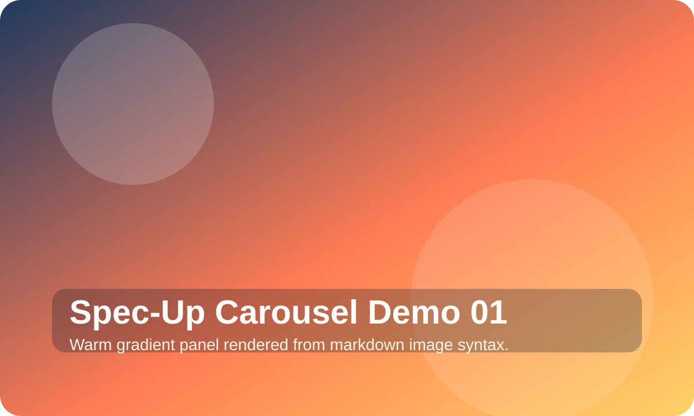
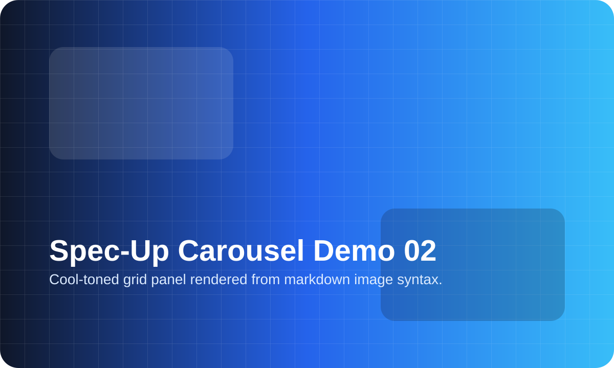
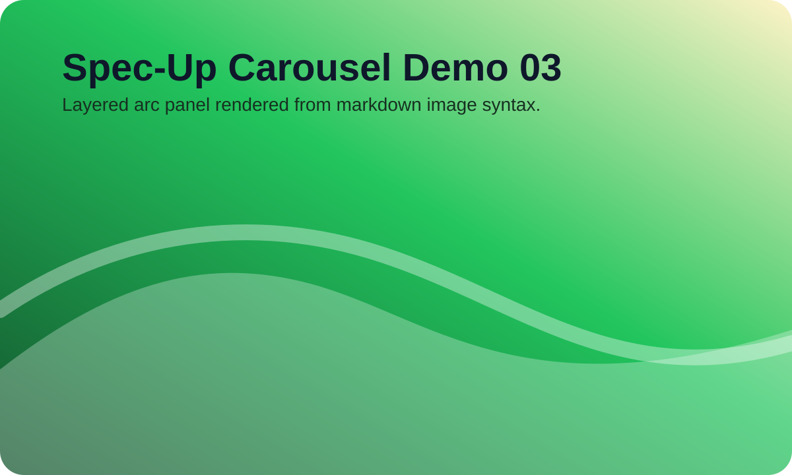

Spec-Up Example§
Specification Status: Draft
Latest Draft: https://identity.foundation/spec-up
- Editors:
- Daniel Buchner
- Participate:
- GitHub repo
- File a bug
- Commit history
Abstract§
Let’s face it, other tools and generators for writing technical specifications aimed at standards bodies or industry groups are cumbersome, underwhelming, and lack the features you might want in a technical specification document. Spec-Up’s goal is to deliver you a better spec-writing experience with far less effort and tedium than other tools in the ecosystem. Spec-Up is a simple tool that auto-generates great specs from markdown. The version of markdown Spec-up uses contains all the same features you might expect from common implementations, like GitHub, but adds much more, including notice blocks, complex tables, charts, advanced syntax highlighting, UML diagrams, etc.
Getting Started§
Using Spec-Up is easy peasy lemon squeezy:
-
npm install spec-up -
Create a
specs.jsonfile in the root folder of your repository to configure one or more specs. Common fields include:spec_directory(STRING, required) - The repo-root-relative location of your spec markdown directory. If you do not providemarkdown_paths, Spec-Up readsspec.mdfrom this directory by default.title(STRING, required) - The title rendered in the generated document’s H1 text and page title.logo/logo_link(optional) - Add a logo and optional target link for the rendered header.markdown_paths(ARRAY, optional) - If you want to assemble multiple files into a single output document, list them here in order. Paths are resolved relative tospec_directory.katex(BOOLEAN, optional) - Enables TeX support via KaTeX.output_path(STRING, optional) - Writes the generated output somewhere other thanspec_directory.source(OBJECT, optional) - Adds repo metadata used by repo-aware UI features such as the GitHub links shown in this example.external_specs(ARRAY, optional) - Enables[[xref: ...]]references into other Spec-Up-rendered specs.assets(ARRAY, optional) - Injects extra CSS or JS files into the rendered page when you need custom page assets. Asset objects supportpath, optionalinject("head"or"body"for JS), and optionalmodulefor JS modules.plugins(ARRAY, optional) - Adds plugins for this spec, or at the top level ofspecs.jsonfor every spec in the project.
-
Render either programmatically or through the Vite workflow:
require('spec-up')({ nowatch: true })renders once.require('spec-up')()renders and keeps file watchers running.- The default local workflow in this repo uses Vite, as shown below.
Boom! That’s it. Use npm run build for a one-shot render, npm run edit for a watch build, or npm run dev for a live-reloading dev server.
Usage
If your specs.json, package.json, and vite.config.mjs files are in the project root, Spec-Up can be run from the repo root in four common modes:
| command | behavior |
|---|---|
npm run build |
runs vite build, rebuilds compiled frontend assets when needed, and renders the configured specs once. |
npm run edit |
runs vite build --watch so spec markdown, injected assets, plugin files, and frontend source are watched together. |
npm run render |
alias for vite build if you prefer the old command name. |
npm run dev |
runs the Vite dev server and reloads the rendered spec when watched sources change. |
Table of Contents§
<-- You see that beautiful TOC over there to your left? (tap the header link to slide it out on mobile) Yeah, you don’t need to do a damn thing, that just magically appears based on your use of h2, h3, and h4 headings.
Term References§
Definition Lists§
Many specs may want to include a section for terminology references, and Definition Lists are a great way to do that. Here’s how to leverage Spec-Up’s automatic term reference features via Definition List markup:
[[def: Term 1, Term One]]: ~ This is the first term we will define. [[def: Term 2, Term Two]]: ~ This is the second term, but not the last. [[def: Term 3, Term Three]]: ~ This is the last term, because you know what they say: third term's the charm!
- Term 1:
- This is the first term we will define.
- Term 2:
- This is the second term, but not the last.
- Term 3:
- This is the last term, because you know what they say: third term’s the charm!
Now let’s refer to some of the terms defined above to show how the auto-linking of terms works: Term 1, Term Two, Term 3. Additionally, as long as you define your terms using Definition Lists (as seen in the markdown above), you will be able to hover any reference to a term to see a tooltip with its definition.
Table-defined Terms§
You can also reference table-oriented terms and definitions which are decomposed into heading-titled attributes in distinct cells:
Variable | Default Value | Max Value ------------------- | -------------- | --------- [[def: Variable 1]] | 123 | 9999
| Variable | Default Value | Max Value |
|---|---|---|
| Variable 1 | 123 | 9999 |
Anytime you add a definition of a term in the first column of a table, like Variable 1, it will link to the cell and display a tooltip with the entire set of row values when you hover the term.
External Term References§
It is possible to include references to terms from external spec-up generated specifications. To include a source you would like to pull references from include an external_specs array in your spec config. The value should be a key/value object where the key is used in the external reference below and the value is the URL of the external spec.
{
"specs": [
{
...
"external_specs": [
{"PE": "https://identity.foundation/presentation-exchange"}
]
}
]
}
To include an external term reference within your spec use the following format [[xref: {title}, {term}]] where {title} is the title given to the spec in the config and {term} is the term being used. For example using the PE spec given in the example above Holder
Blockquote§
To be, or not to be, that is the question: Whether 'tis nobler in the mind to suffer The slings and arrows of outrageous fortune, Or to take arms against a sea of troubles And by opposing end them. To die—to sleep, No more;
Notices§
::: note Basic Note Check this out. :::
Check this out.
Here’s another.
And one more!
One last note!!!
::: issue Issue Notice I take issue with that, kind sir. :::
I take issue with that, kind sir.
::: warning Warning Notice Houston, I think we have a problem :::
Houston, I think we have a problem
::: todo Really Important Get this done! :::
Get this done!
::: example Code Example Put your code block here :::
// Some comment in JSON
{
"foo": "bar",
"baz": 2
}
Content Insertion§
Use the following format to pull in content from other files in your project:
This text has been inserted here from another file: [[insert: ./single-file-test/assets/test.text]]
This text has been inserted here from another file: Beam me in, Scotty!
You can even insert content within more complex blocks, like the JSON object below which is being pulled in and rendered in a syntax-highlighted example block:
::: example Code Example ```json [[insert: ./single-file-test/assets/test.json]] ``` :::
{
"foo": {
"bar": 1
}
}
Tables§
Stage | Direct Products | ATP Yields ----: | --------------: | ---------: Glycolysis | 2 ATP || ^^ | 2 NADH | 3--5 ATP | Pyruvaye oxidation | 2 NADH | 5 ATP | Citric acid cycle | 2 ATP || ^^ | 6 NADH | 15 ATP | ^^ | 2 FADH2 | 3 ATP | **30--32** ATP ||| [Net ATP yields per hexose]
| Stage | Direct Products | ATP Yields |
|---|---|---|
| Glycolysis | ||
| 2 NADH | 3–5 ATP | |
| Pyruvaye oxidation | 2 NADH | 5 ATP |
| Citric acid cycle | ||
| 6 NADH | 15 ATP | |
| 2 FADH2 | 3 ATP | |
|--|--|--|--|--|--|--|--| |♜| |♝|♛|♚|♝|♞|♜| | |♟|♟|♟| |♟|♟|♟| |♟| |♞| | | | | | | |♗| | |♟| | | | | | | | |♙| | | | | | | | | |♘| | | |♙|♙|♙|♙| |♙|♙|♙| |♖|♘|♗|♕|♔| | |♖|
| ♜ | ♝ | ♛ | ♚ | ♝ | ♞ | ♜ | |
| ♟ | ♟ | ♟ | ♟ | ♟ | ♟ | ||
| ♟ | ♞ | ||||||
| ♗ | ♟ | ||||||
| ♙ | |||||||
| ♘ | |||||||
| ♙ | ♙ | ♙ | ♙ | ♙ | ♙ | ♙ | |
| ♖ | ♘ | ♗ | ♕ | ♔ | ♖ |
Sequence Diagrams§
```mermaid sequenceDiagram Alice ->> Bob: Hello Bob, how are you? Bob-->>John: How about you John? Bob--x Alice: I am good thanks! Bob-x John: I am good thanks! Note right of John: Bob thinks a long
long time, so long
that the text does
not fit on a row. Bob-->Alice: Checking with John... Alice->John: Yes... John, how are you? ```
long time, so long
that the text does
not fit on a row. Bob-->Alice: Checking with John... Alice->John: Yes... John, how are you?
Flows§
```mermaid
graph TD
A[Start] --> B{Is it?}
B -->|Yes| C[OK]
C --> D[Rethink]
D --> B
B -->|No| E[End]
```
Charts§
```chart
{
"type": "pie",
"data": {
"labels": [
"Red",
"Blue",
"Yellow"
],
"datasets": [
{
"data": [
300,
50,
100
],
"backgroundColor": [
"#FF6384",
"#36A2EB",
"#FFCE56"
],
"hoverBackgroundColor": [
"#FF6384",
"#36A2EB",
"#FFCE56"
]
}
]
}
}
```
Syntax Highlighting§
```json
{
"@context": "https://www.w3.org/ns/did/v1",
"id": "did:example:123456789abcdefghi",
"authentication": [{
"id": "did:example:123456789abcdefghi#keys-1",
"type": "RsaVerificationKey2018",
"controller": "did:example:123456789abcdefghi",
"publicKeyPem": "-----BEGIN PUBLIC KEY...END PUBLIC KEY-----\r\n"
}],
"service": [{
"id":"did:example:123456789abcdefghi#vcs",
"type": "VerifiableCredentialService",
"serviceEndpoint": "https://example.com/vc/"
}]
}
```
{
"@context": "https://www.w3.org/ns/did/v1",
"id": "did:example:123456789abcdefghi",
"authentication": [{
"id": "did:example:123456789abcdefghi#keys-1",
"type": "RsaVerificationKey2018",
"controller": "did:example:123456789abcdefghi",
"publicKeyPem": "-----BEGIN PUBLIC KEY...END PUBLIC KEY-----\r\n"
}],
"service": [{
"id":"did:example:123456789abcdefghi#vcs",
"type": "VerifiableCredentialService",
"serviceEndpoint": "https://example.com/vc/"
}]
}
TeX Math Equations§
When the katex option is enabled, the KaTeX math engine is used for TeX rendering. You can find a list of supported features and examples here: https://katex.org/docs/supported.html.
Tab Panels§
::: tabs
:: First Tab
This is the first tab.
```json
{
"foo": "foo",
"baz": 1
}
`` `
:: Second Tab
This is the second tab.
```json
{
"foo": "bar",
"baz": 2
}
`` `
:::
This is the first tab.
{
"foo": "foo",
"baz": 1
}
This is the second tab.
{
"foo": "bar",
"baz": 2
}
Summary Blocks§
::: summary My summary text here
Details of what I want to show here.
:::
Details of what I want to show here.
Badges§
[[badge: All Systems Operational]]
[[badge: Needs Attention, warning]]
Progress§
[[progress: bar, 50]]
[[progress: ring, 75]]
[[progress: bar, 50, 50%]]
[[progress: ring, 75, 3rem]]
Relative Time§
[[time: 2020-07-15T09:17:00-04:00, long]]
[[time: 2020-07-15T09:17:00-04:00, short]]
Copy§
[[copy: did:key:z6Mkf4XhsxVYQ1nQ6V6k4Q9j7xVjQm1Qw9Yk6B8JfP3L2mN4]]
[[copy: https://github.com/decentralized-identity/spec-up]]
did:key:z6Mkf4XhsxVYQ1nQ6V6k4Q9j7xVjQm1Qw9Yk6B8JfP3L2mN4
https://github.com/decentralized-identity/spec-up
QR Codes§
[[qr: github.com/csuwildcat]]
[[qr: github.com/csuwildcat, 200]]
Carousel§
::: carousel

::

::

:::



Fancy Links§
Spec-Up automatically upgrades the links of certain sites, like GitHub. GitHub is the only supported site with Fancy Links right now, but we’ll be adding more as we go.
GitHub§
- Issues
- Source:
https://github.com/decentralized-identity/presentation-exchange/issues/119 - Render: https://github.com/decentralized-identity/presentation-exchange/issues/119
- Source:
- Pull Requests
- Source:
https://github.com/decentralized-identity/sidetree/pull/863 - Render: https://github.com/decentralized-identity/sidetree/pull/863
- Source:
- Releases
- Source:
https://github.com/decentralized-identity/sidetree/releases/tag/v0.9.1 - Render: https://github.com/decentralized-identity/sidetree/releases/tag/v0.9.1
- Source:
- Projects
- Source:
https://github.com/decentralized-identity/sidetree/projects/1 - Render: https://github.com/decentralized-identity/sidetree/projects/1
- Source:
External Spec References§
You can reference external specifications from IETF, W3C, and WHATWG as follows:
- Anywhere in your document you want to referece an external specification, use the
spec-prefixed custom token format:[[spec:RFC4122]] - Wherever in your document you want to print out all your external specification references, use the
speccustom token format without any spec name:[[spec]]
- If you want to split up your references into groups (e.g. normative vs informative), just make sure to use dash-delimited unique reference grouping string in your custom tokens:
[[spec-norm:RFC4122]],[[spec-inform:RFC4122]],[[spec-foo:RFC4122]], etc. - To print out a custom group’s references, just include the grouping string for a given set of references in a custom token without any spec name:
[[spec-norm]],[[spec-inform]],[[spec-foo]].
Here are a set of example references that are distributed among the reference groups spec, spec-norm, spec-inform:
- [RFC3548] (
[[spec:RFC3548]]) - [RFC7518] (
[[spec:RFC7518]]) - [DID-CORE] (
[[spec-norm:DID-CORE]]) - [DID-SPEC-REGISTRIES] (
[[spec-norm:DID-SPEC-REGISTRIES]]) - [RFC6901] (
[[spec-inform:RFC6901]]) - [RFC7230] (
[[spec-inform:RFC7230]])
Default References§
This is what is printed out when you include the [[spec]] custom token in your Markdown:
- RFC3548
- The Base16, Base32, and Base64 Data Encodings. S. Josefsson, Ed.; 2003-07. Status: Informational.
- RFC7518
- JSON Web Algorithms (JWA). M. Jones; 2015-05. Status: Proposed Standard.
Normative References§
This is what is printed out when you include the [[spec-norm]] custom token in your Markdown:
- DID-CORE
- Decentralized Identifiers (DIDs) v1.0. Manu Sporny; Amy Guy; Markus Sabadello; Drummond Reed; 2022-07-19. Status: REC.
- DID-SPEC-REGISTRIES
- DID Specification Registries. Orie Steele; Manu Sporny; 2023-09-11. Status: NOTE.
Informative References§
This is what is printed out when you include the [[spec-inform]] custom token in your Markdown:
- RFC6901
- JavaScript Object Notation (JSON) Pointer. P. Bryan, Ed.; K. Zyp; M. Nottingham, Ed.; 2013-04. Status: Proposed Standard.
- RFC7230
- Hypertext Transfer Protocol (HTTP/1.1): Message Syntax and Routing. R. Fielding, Ed.; J. Reschke, Ed.; 2014-06. Status: Proposed Standard.